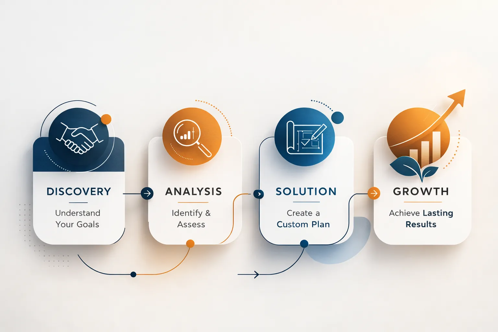

Someone lands on your website. They've already done their research, looked at two or three other professionals, and now they're deciding whether you're worth reaching out to. In that moment, they're not comparing prices or reading through your list of services. They're asking themselves a more instinctive question: "Can I actually trust this person?"
This is true whether you're a therapist looking to grow your practice, a physical therapist trying to fill your schedule, a physician running a private clinic, or a real estate agent building your client base. In every one of these cases, your website isn't just a digital brochure. It's your first handshake.
And trust doesn't happen by accident. It's built through specific elements that a visitor recognizes, consciously or not, within seconds of landing on your page.
1. Your Face, Not a Stock Photo
The first and most commonly overlooked trust signal is your photo. Not a polished image of some stranger in a professional setting pulled from a stock library, but you, yourself.
People searching for a therapist, a doctor, or a real estate agent want to see who they're going to meet. An authentic portrait that conveys warmth and professionalism can completely change how someone perceives your website. It doesn't need to be a formal studio shoot. It needs to feel real.
Many professionals hesitate to put their photo front and center, feeling like it comes across as self-promotional or simply "not that important." In reality, the absence of a face turns your website into a conversation with an anonymous entity. And nobody trusts an anonymous entity with their problems.
Alongside your photo, it's worth adding an image of your actual space, especially if you work out of a physical office or clinic. Which brings us to something else that far too many professionals skip entirely: demonstrating that you exist in the physical world.
For doctors, physical therapists, and any service provider with a brick-and-mortar location, embedding a Google Maps widget on your website is more than a technical convenience. It signals that you have an address, that someone could walk through your door, that you're rooted somewhere real. This single detail separates a credible professional website from a faceless page on the internet with no point of reference in the real world. It also plays a meaningful role in local SEO, helping you show up when people in your area are actively searching for what you offer.
2. Real People Vouching for You
Testimonials aren't a new concept, but how you present them makes all the difference. A generic comment like "Highly recommend, truly exceptional professional" doesn't tell anyone very much. A testimonial that walks through a specific situation, explains what changed for that person, and reflects a real experience carries far more weight.
For healthcare and mental health professionals, there are obvious confidentiality considerations that need to be respected. That said, you can invite patients or clients who are comfortable sharing their experience to leave reviews on platforms like Google or Healthgrades. Those reviews can then be featured on your website through an embed or a simple screenshot.
In real estate, a review from a client who sold their home in under 30 days or finally found the right property after months of searching will say more than anything you could write about yourself. Let your clients do the talking.
3. Being Clear About What You Do and Who You Serve
One of the biggest mistakes I see on professional service websites is vagueness. "I provide high-quality services tailored to a wide range of needs." That sentence means nothing to anyone.
Every visitor wants to understand within the first ten seconds: "Is this person the right fit for what I'm dealing with?" If the answer isn't immediately obvious, they'll leave.
A therapist who specializes in anxiety and panic disorders should say so plainly. A physical therapist who primarily works with athletes or post-surgical recovery patients should make that clear above the fold. Specialization doesn't scare clients away. It pulls them closer, because they feel like they're talking to someone who truly gets what they're going through.
But clarity doesn't stop at "what you do." It extends to "how you do it." And this is where one of the most underused trust-building tools comes in.
Show Them the Process
Beyond the services you offer, people are afraid of the unknown. They don't know what happens if they reach out. Will they be locked into something immediately? Is there a cost upfront? How long does this take?

A simple section called "How It Works" or "What to Expect" that walks through your process in three or four steps answers all of those concerns before they're even raised. Something like: a free introductory call, an assessment of your situation, a personalized plan, and ongoing support. This structure signals that you don't operate randomly. You have a methodology. And for someone who's deciding whether to trust you with something personal, that matters a great deal.
4. Credentials That Are Actually Visible
This sounds obvious, yet many professionals either leave their credentials off the website entirely or bury them somewhere on an About page that most visitors never reach.
Certifications, degrees, professional licenses, and memberships in recognized associations are trust signals that pull double duty. First, they confirm to the visitor that they're dealing with someone legitimate and credentialed. Second, they register with search engines as markers of authority, which strengthens your SEO.
Put your credentials somewhere prominent. If you're a member of the American Psychological Association, the American Physical Therapy Association, the National Association of Realtors, or any equivalent body in your field, that should be visible. If you've trained in a specific recognized method or approach, name it clearly and briefly explain what it means for the client in practical terms. Don't assume people will know what the acronyms stand for.
5. Communication That Feels Human
The fifth trust signal is one that most people treat as a technical detail, but it's really a matter of psychology: how easy and human it feels to actually get in touch with you.
A contact form with twelve fields asking for every possible piece of information before a single conversation has even happened sends a clear message: "I don't respect your time." By contrast, a simple form with a name, an email address, and one open field where someone can describe what's on their mind creates far less friction and results in far more submissions.
Equally important, though, is what your button actually says. The standard "Submit" is functional but cold. It's the language of a government form, not a human connection. A button that reads "Let's Start a Conversation" or "Book Your First Appointment" or "Tell Us How We Can Help" shifts the entire tone of the interaction. It signals that there's a real person on the other side waiting to respond, not an automated system collecting data.
If you offer online scheduling or a short complimentary consultation, make it visible. People reaching out to a therapist or a doctor for the first time often feel vulnerable. Showing them that there's a low-commitment first step reduces the hesitation that stops people from asking for help in the first place.
The Bottom Line
Trust isn't built with better graphics or cleverer marketing copy. It's built when someone visiting your website feels like they're seeing a real person with demonstrated expertise, a clear methodology, and a genuine understanding of their situation, who makes it easy to take that first step.
Each of the five elements covered here, your authentic presence and physical location, real testimonials, clarity around who you serve and how you work, visible credentials, and human communication, work together to build that trust before you've ever met someone in person.
If your website already has some of these in place, you're ahead of most of your competition. If it doesn't, there's no better time to start. Every inquiry you're not getting today is someone who moved on to the next name on the list, not because they were a better fit, but because that website did a better job of making them feel at home.
Ready to build a digital presence that earns trust?
At Evida Studio, we craft custom websites for service professionals focused on clarity, structure, and conversion.
Let's discuss your project